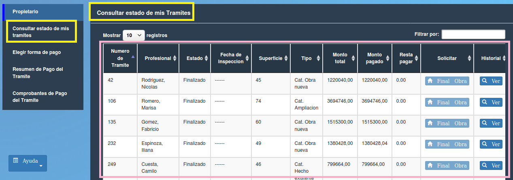

Consultar estado de mis Tramites¶
Esta permite al propietario visualizar datos de sus tramites. Los datos presentes en la tabla son:
- Nro (Número de trámite)
- Profesional
- Estado (estado del trámite, ej Aceptado)
- Superficie (superficie en metros cuadrados)
- Tipo (tipo de obra, ej Cat. Hecho existente)
- Monto total (el monto total a pagar)
- Monto pagado (monto que ya se abonó)
- Resta pagar (monto pendiente de pago)
- Solicitar (Final Obra)
- Historial (Ver)